01Лунная линия
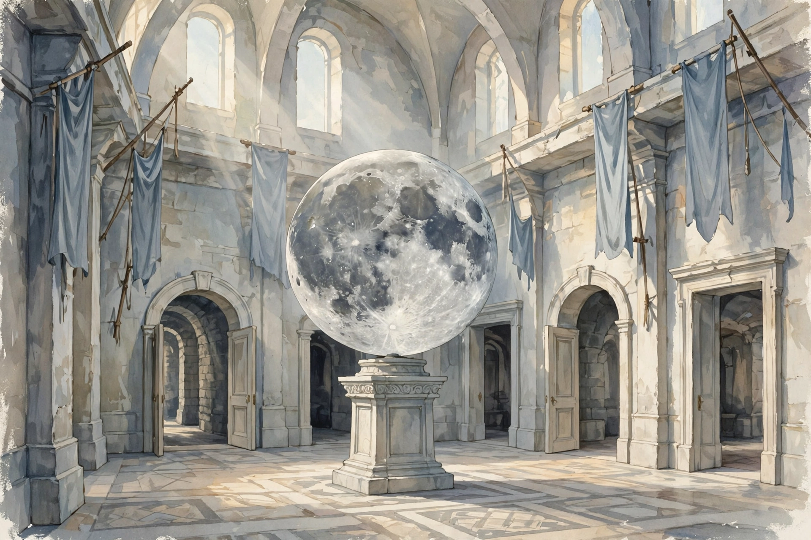
Лунная линия — один холдинг, одна Луна, сто двадцать комнат.
Один холдинг, одна Луна. Эта страница собирает все лунные проекты нашего дома в единый зал: строительный отдел, который выдаёт разрешения на строительство в Море Спокойствия, промышленное подразделение, которое добывает руду в кратере Shackleton, торговый центр, который ждёт своих первых покупателей, и зелёный лист, который всех их накормит.
Страница длинная — сто двадцать комнат. Идите медленно. Здесь ничто не спешит, и Луна — меньше всего.
02Музей рабочих проектов

Музей рабочих проектов — в залах тихо, экспонаты работают.
Всё на этой странице построено и включено. Что-то из этого — бумага, что-то — программы, что-то — чистая концепция, выдержанная по стандарту настоящего учреждения. Всё поместье мы называем музеем рабочих проектов: в залах тихо, экспонаты работают, а посетитель приходит, когда приходит.
Луна, как вы заметите, устроена ровно по тому же принципу.
03Настоящая Луна, сегодня

Настоящая Луна, сегодня — вторая космическая эра оказалась административной.
Это больше не страница о будущем в абстрактном смысле. Пилотируемый корабль снова облетел Луну. Генеральная репетиция посадки назначена на околоземной орбите, а сама посадка — первая с 1972 года — датирована: 2028 год, Южный полюс Луны.
Коммерческие компании теперь держат контракты с твёрдой ценой: доставлять грузы на поверхность, строить посадочные модули, шить скафандры. Шестьдесят одно государство подписало соглашения, которые регулируют поведение там, наверху. Луна тихо начала обзаводиться администрацией.
04Почему бумага важна

Каждый фронтир прибывает дважды — сначала как место, потом как бумага.
Каждый фронтир прибывает дважды: сначала как место, потом как бумажная проблема. Кто может строить и где. Что такое участок. Какая печать делает жилище законным. Наши лунные проекты начались с шутки об этом втором прибытии — и шутка становится всё менее смешной и всё более точной.
Луна принадлежит всем. Именно поэтому бумага важна.
05Холдинг

Холдинг — его не существует, а ведёт он себя так, будто существует.
Всё это принадлежит одному вымышленному учреждению: Hi-Tech Limited Holding — невозмутимой корпорации лунной эры, чьи отделы — наши настоящие проекты. Каламбур здесь структурный, и мы намерены его сохранить: лимитированные издания, общество с ограниченной ответственностью, ограниченная гравитация — 1,62 метра в секунду в квадрате, если точно.
Холдинга не существует, а ведёт он себя так, будто существует. Его отделы, однако, производят настоящие артефакты на настоящих столах — и их вы можете подержать в руках.
06Как идти по этой странице
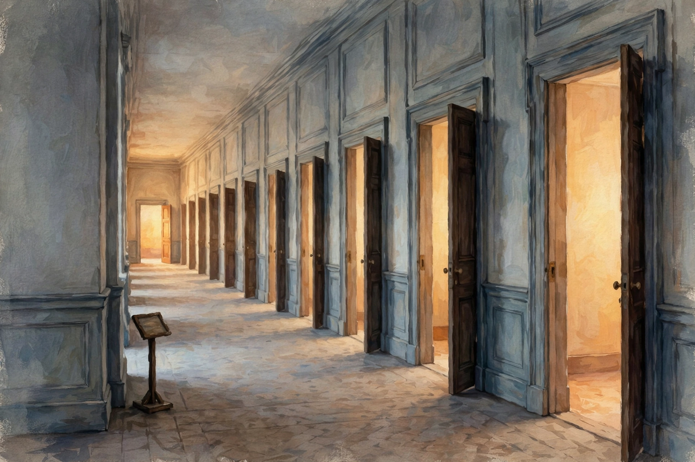
Как идти по этой странице — по десять комнат за раз.
Страница открывается по десять комнат; прокручивайте — и появятся следующие десять. У каждого отдела свой зал. Через каждые пятнадцать комнат стоит стол с формой на нём — напишите нам с любого из них; за всеми столами сидит один и тот же регистратор.
Неправильного порядка не существует. Луна никуда не денется.
07Отделы на одной карте
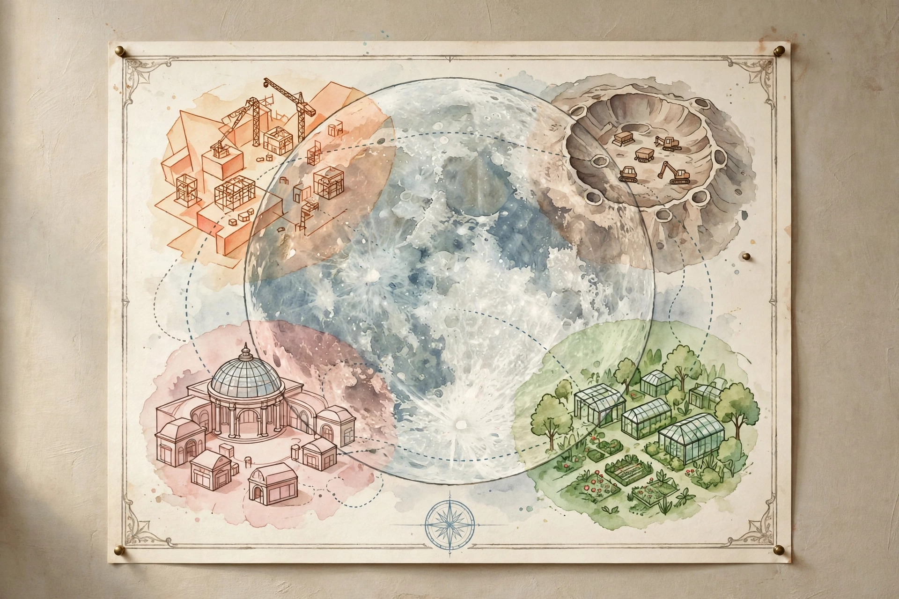
Отделы на одной карте — четыре отдела, одна Луна.
Gravity — флагман: Департамент лунного строительства, его разрешения, участки и граждане. Selene Industrial — внеземная добыча: флот, перерабатывающие заводы, реголит. Lunar Mall — торговля для поселения, которого ещё нет, архивирована с почестями. LEAF — зелёный отдел: еда, кислород и живые существа.
Четыре отдела, одна Луна, один холдинг. Остальная часть этой страницы — их объединённый годовой отчёт, выставочный зал и парадная дверь.
08Хартия честности

Хартия честности — пять видов настоящего, пять ящиков.
Всё умозрительное на этой странице помечено как умозрительное. Разрешения не передают никакой настоящей лунной собственности — её не существует, чтобы передавать. Статистика флота — декорация. Настоящее здесь: бумага, дизайн, пронумерованные издания, люди и намерение построить всё это в настольном масштабе.
Мы находим правду изящнее альтернативы — и заметно легче в содержании.
09Gravity, флагман

Стол регистратора — где начинается каждое разрешение.
Gravity — главный проект этого дома и флагман лунной линии. Он начался с вопроса — как выглядели бы документы лунного поселения, если бы их проектировали с любовью? — и стал отделом, потом холдингом, потом этой страницей.
Его первый продукт мал, бумажен и пронумерован. Это намеренно. Лунные империи построит тот, кто первым освоит мелкий шрифт.
10Департамент лунного строительства
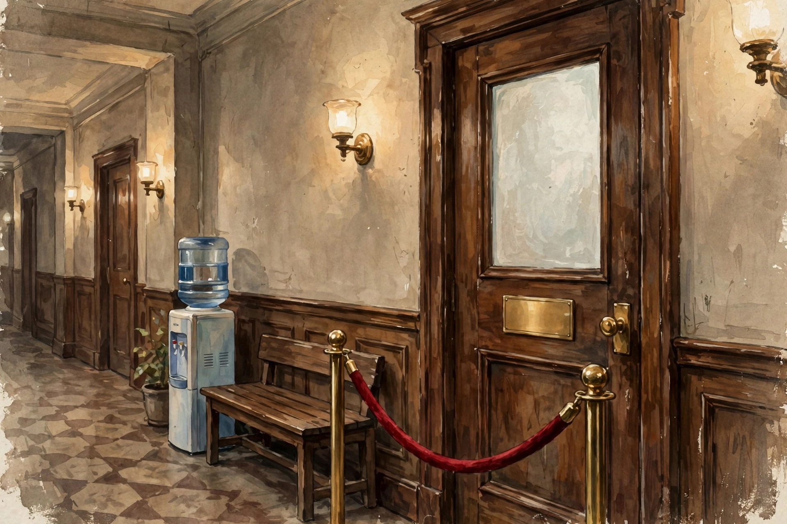
Департамент лунного строительства — печать у него золотая, тон окончательный.
Департамент выдаёт разрешения на строительство на поверхности Луны: жилые модули, мастерские, теплицы, одна обсерватория со вкусом. Каждое разрешение называет участок, класс модуля и условия, на которых Холдинг принимает ваши амбиции.
Печать Департамента золотая, тон окончательный, а его картотечные шкафы в настоящее время — ящик стола в Spokane. Все великие реестры начинались с ящика.
11Разрешение на лунное строительство № 001

Разрешение № 001 — опечатано, пронумеровано, подписано.
Первый артефакт линии: пакет разрешения в трёх листах — само Разрешение, Карта участка и Карточка гражданина. Разрешение № 001 из 100 покрывает Участок 001 в Mare Tranquillitatis, Море Спокойствия, сектор G, 0,67° северной широты, 23,47° восточной долготы.
Оно чисто печатается на отдельном листе, несёт золотую печать и подписано Главным регистратором в отведённом месте. Издание — сто экземпляров. Когда оно закроется, оно закроется.
12Пять Условий строительства

Пять Условий — напечатаны там, где условиям и положено: у всех на виду.
Каждое разрешение несёт пять условий, напечатанных там, где условиям положено, — у всех на виду. Они касаются гравитации, ответственности и пределов Холдинга, и они — душа документа: строительный кодекс, написанный людьми, которые читают строительные кодексы ради удовольствия.
Условие первое: гравитация на участке ограничена — 1,62 м/с². Планируйте соответственно.
13Участок 001, Море Спокойствия

Участок 001 — координата, рядом с которой записано ваше имя.
Море Спокойствия — равнина древней лавы, ровная, как затаённое дыхание, где человечество впервые ступило на Луну в 1969 году. Участок 001 находится в секторе G, в хорошей компании и при лучшем свете.
Участок в нашем реестре — пронумерованная претензия на воображение, записанная в книге Холдинга и на карте вашего пакета. Это не земля. Это нечто более редкое: координата, рядом с которой записано ваше имя.
14Карта участка

Сектор G, нарисованный — бюрократия в раме становится искусством.
Второй лист пакета: участок, нарисованный. Береговые линии лавовых морей, сетка секторов, отметка, где однажды условно встанет ваш модуль. Картография — старейшая форма бумажной работы и до сих пор самая красивая.
Повесьте её рядом с разрешением. Бюрократия в раме становится искусством — вся бизнес-модель Холдинга в одном предложении.
15Карточка гражданина

Карточка гражданина — имя, номер, список, который ведут бережно.
Третий лист делает владельца гражданином Холдинга: имя, номер, карточка. Гражданство здесь не даёт никаких прав ни по земному, ни по лунному закону — и одну настоящую привилегию: вы в списке людей, которые были ранними, а список ведут бережно.
Каждое учреждение в своей основе — список его людей, который ведут бережно.
✉️ Стол регистратора
Напишите Холдингу — разрешение, вопрос, поправку к карте. Ответим в течение дня, полными предложениями.
16Клятва

Клятва — разрешение, которое вы выдаёте сами себе.
Граждане подписывают Клятву — короткий, серьёзный текст о том, чтобы строить бережно, ничего не тратить впустую и оставлять поверхность лучше задокументированной, чем они её нашли. Свидетельство о Клятве № 001 висит на имя первого гражданина: основателя.
Клятва — это разрешение, которое вы выдаёте сами себе. Департамент лишь предоставляет форму.
17Жилой модуль, класс C

Класс C изнутри — одно окно, поставленное с намерением.
Первый утверждённый проект разрешения: жилой модуль класса C — компактный, цилиндрический, упрямо практичный. Один шлюз, одно окно, поставленное с намерением, место для стола. Вся лунная архитектура начинается со спора о том, где будет стоять стол.
Класс C спроектирован так, чтобы сначала построить его на вашем столе: бумага сегодня, миниатюра завтра, полный размер — когда тарифы на перевозку успокоятся.
18Сначала бумага

Сначала бумага — ей ни разу не понадобилось стартовое окно.
Холдинг строит сначала в бумаге. Пакет разрешений стоит почти ничего в производстве, отправляется в любую точку Земли в конверте и переживёт любой формат файлов, которым мы с вами когда-либо будем пользоваться.
Внутри шутки есть стратегия: первая лунная экономика будет работать на документах задолго до того, как заработает на грузах. Мы практикуемся в документах.
19Первый выпуск

Первый дроп — сто реестров, открываемых по одному конверту за раз.
Комплект разрешения — первый дроп линейки: номерное издание в сто экземпляров, предлагаемое честно, без таймеров обратного отсчёта и искусственной паники. Когда сто реестров будут открыты, Департамент сочтёт эксперимент успешным и спроектирует второй артефакт.
Станет ли вторым набор модуля — зависит, при всём уважении, от первой сотни граждан.
20Как делается разрешение

Собирается вручную — карта сложена один раз, правильно.
Каждый комплект собирается вручную: разрешение печатается и проверяется, карта складывается один раз — правильно, — карточка нумеруется по порядку. Регистратор осматривает золотую печать так, как портные осматривают шов.
Массовое производство нам доступно — и отклонено. Реестр — это обещание; обещания даются по одному.
21Модули, которые ещё будут

Модули, которые ещё будут, — Луна в масштабе 1:87, колонизирующая вашу книжную полку.
На чертёжной доске Департамента: модуль оранжереи (у LEAF на этот счёт есть мнение), мастерская и длинная галерея, которая соединяет два жилых модуля и тут же становится социальным центром любого поселения, как это всегда бывает с галереями.
Каждый прибудет в виде набора, который вы соберёте за своим столом, — Луна в масштабе 1:87, колонизирующая вашу книжную полку в правильном порядке.
22Сетка секторов

Сетка секторов — адрес делает место настоящим.
Холдинг делит свои моря на секторы, а секторы — на участки, потому что так поступают реестры, и потому что сетка с именами превращает «где-то на Луне» в адрес. Адреса — это то, как места становятся настоящими для людей, которые там никогда не были.
Большая часть Луны человечества до сих пор не имеет адресов. Мы над этим работаем — по одному сектору за раз.
23Строительный кодекс для низкой гравитации

Строительный кодекс для низкой гравитации — лестницы становятся предложением.
При 1.62 m/s² лестницы становятся предложением, а потолки — возможностью. Кодекс Департамента — отчасти дань инженерии, отчасти этикет — охватывает балласт, страховочные тросы и правильное хранение супа.
Его никогда никто не будет применять. Тем не менее он полон, непротиворечив и снабжён перекрёстными ссылками, что ставит его впереди нескольких настоящих кодексов, которые мы могли бы назвать.
24Граждане, покровители, резиденты

Реестр — граждане, покровители и страницы, пока пустые.
Холдинг признаёт три степени принадлежности: граждане, у которых есть карточка; покровители, которые финансируют следующую чертёжную доску; и резиденты — категория, которой пока не существует, зарезервированная для того, кто первым сохранит модуль тёплым на протяжении лунной ночи.
Эта лестница — одновременно план монетизации и мифология. По нашему опыту, обычно это один и тот же документ.
25Стол регистратора

Стол регистратора — все столы обслуживает один и тот же регистратор.
Каждая форма на этой странице прибывает на один и тот же стол, а стол — это человек: регистратор читает всё, отвечает полными предложениями и подшивает ваше сообщение в правильный ящик правильного шкафа.
Пишите о разрешении, об участке, о партнёрстве или о поправке к нашей селенографии. Всё это — дела Департамента. На всё будут ответы.
26Чем Gravity не является
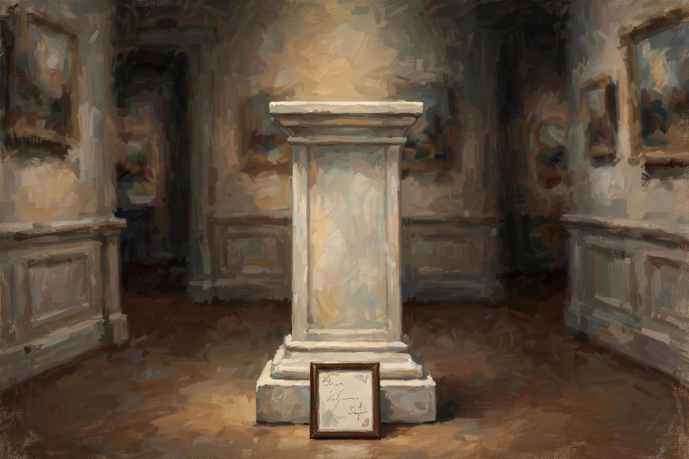
Чем Gravity не является — вымысел служит рамкой; работа настоящая.
Gravity — это не претензия на Луну, не инвестиция, не обещание доходности и не филиал какого-либо космического агентства, при всём нашем тёплом восхищении несколькими из них. Это дизайнерская практика, носящая мундир учреждения, и мундир этот носят с уважением.
Вымысел — это рамка. Работа внутри рамки — настоящая.
27Selene Industrial

Добывающий флот у кромки кратера.
Там, где Gravity занимается бумагами поселения, Selene Industrial занимается его весом. Selene — внеземное добывающее подразделение Холдинга: автономные горные установки, заводы по выплавке реголита и орбитальная инфраструктура, на которой работает окололунная экономика, — или будет работать, когда наконец закончит прибывать.
Его учредительный документ — экран состояния, и этот экран говорит, что флот на связи. Флот, как и всё здесь, — проект, который выдерживают по эксплуатационному стандарту.
28Кратер Shackleton

Кратер Shackleton — солнечный свет на кромке, лёд во тьме.
Концессия Selene расположена там, где расположилась бы любая здравомыслящая лунная промышленность: кратер Shackleton, на Южном полюсе, — кромка в почти постоянном солнечном свете над дном в постоянной тени, где водяной лёд ждёт во тьме, как сберегательный счёт.
Энергия на кромке, вода во тьме и короткая дорога между ними. Полюс — первый промышленный адрес Луны, и планы посадок реального мира согласны с нашим вымыслом.
29Добывай. Перерабатывай. Строй.

Добывай. Перерабатывай. Строй. — вся доктрина в трёх кадрах.
Вся доктрина подразделения укладывается в три глагола. Добывай: бери реголит и лёд такими, какие они есть. Перерабатывай: превращай их в кислород, воду, металл и дорогу. Строй: всё остальное становится возможным только после того, как первые два станут скучными.
Цивилизации основываются не на прорывах. Они основываются в тот день, когда добыча становится рутиной. Selene существует, чтобы вообразить эту рутину в деталях.
30Добывающий флот

Добывающий флот — всё должно хотя бы делать вид, что создаёт крутящий момент.
Экскаваторы Mark-IV, флот транспортных роверов и перерабатывающие установки, рассчитанные на вакуум и радиацию, — каталог читается как торговая ярмарка для рынка с одним-единственным покупателем: будущим. Каждая машина нарисована, снабжена спецификацией и графиком обслуживания, потому что машина без спецификации — просто скульптура.
Скульптуре есть своё место — в Lunar Mall, дальше по коридору. В Selene всё должно хотя бы притворяться, что создаёт крутящий момент.
✉️ Стол регистратора
Напишите в Холдинг — о разрешении, с вопросом, с поправкой к карте. Ответы в течение дня, полными предложениями.
31Реголит, универсальная руда

Реголит, уговорённый стать металлом.
Лунный грунт — ужасный материал и одновременно замечательный: абразивный, безвоздушный, полный острого стекла — и несущий кислород в самой своей химии, сорок процентов по весу, запертых в оксидах, в ожидании тепла и терпения.
Плавильные печи Selene спроектированы вокруг этой сделки. На Луне вы не ввозите свой строительный материал. Вы уговариваете грунт им стать.
32Oxygen Alpha

Oxygen Alpha — логистика начинается с дыхания.
O2 Refinery Alpha — бьющееся сердце флота в нашем реестре: установка, которая раскалывает реголит и лёд в единственный товар, который поселению нечем заменить. Каждый лунный план, настоящий или вымышленный, находится ниже по течению от кислорода.
Мы дали ей первый номер реестра намеренно. Империи — это логистика, а логистика начинается с дыхания.
33Гелий-3, честно

Гелий-3 — единственная лицензированная мечта департамента.
Да, каталог включает гелий-3 и приводит фантастическую цену, которую приводят все. По-честному: He-3 — топливо для термоядерных реакторов, которых пока не существует в коммерческом виде, добываемое из грунта, где его содержание — части на миллиард. Это лицензированная мечта линейки.
Холдинг позволяет себе ровно одну мечту на департамент. Мечта Selene — He-3. Мечта Gravity — лист ожидания на участки. Обе промаркированы.
34Орбитальная инфраструктура

Орбитальная инфраструктура — транспортная система раньше городского силуэта.
Над поверхностью на чертежах Selene: склады, буксиры и стартовая петля из бумаг — манифесты, права на стыковку, топливные книги. Окололунная экономика, когда она придёт, будет транспортной системой прежде, чем станет силуэтом города.
Кто ведёт книги этого движения, тот держит тихую разновидность власти. Холдинг это заметил — и спроектировал книгу.
35Телеметрия и экран состояния

Телеметрия — половина инженерного дела: сделать так, чтобы табло показывало спокойствие.
Публичное лицо Selene — табло состояния, выглядящее как настоящее: добыча в день, здоровье установок, температура поверхности −173°C. Это спроектированный артефакт — портрет промышленного предприятия таким, каким оно должно ощущаться из диспетчерской: спокойным, зелёным, неторопливым.
Половина инженерии — сделать так, чтобы табло показывало спокойствие. Другая половина — заслужить его.
36Контракты, в принципе
Контракты, в принципе — предложение есть часть того, как рынок учится существовать.
Страница контрактов Selene приглашает к разговору, который пока не может исполнить: услуги по добыче для экономики, которая ещё строится. Мы сохраняем эту страницу, потому что учреждения должны заявлять своё предложение до того, как рынок появится, — предложение является частью того, как рынок учится существовать.
Если вы строите настоящую версию чего-либо из этого, стол регистратора — несколькими залами дальше — искренне хотел бы получить от вас весть.
37Lunar Mall

Атриум — сердце Lunar Mall под земным светом.
Каждое поселение в конце концов строит одно и то же здание: то, куда люди идут не потому, что должны, а потому, что там все остальные. На Земле это торговый центр. Холдинг, планируя наперёд, как обычно, спроектировал лунный.
Lunar Mall — розничный департамент линейки: умозрительная торговая среда для поселения, которого пока не существует, спроектированная с той же серьёзностью, что и рудники и реестры, потому что моральный дух — тоже инфраструктура.
38Концепция из серии LIAF
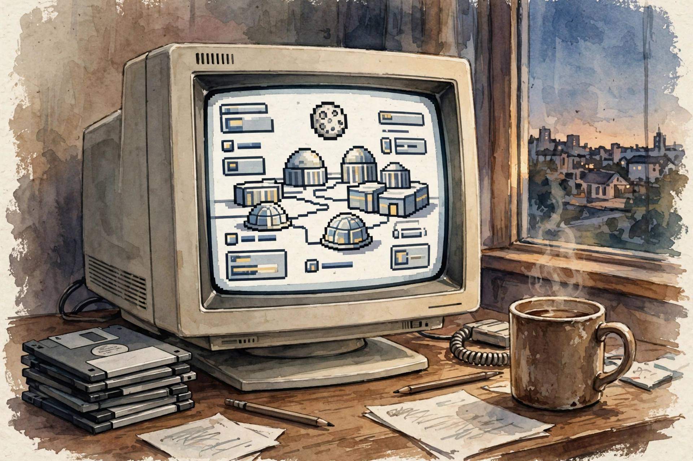
Концепция из серии LIAF — первый черновик будущего.
Lunar Mall начался внутри серии LIAF — раннего созвездия умозрительных сервисов семьи — с простого соображения: если люди собираются жить там, наверху, кому-то следует подумать, где они в один и тот же день купят чайник, пальто и подарок на день рождения.
Из всех лунных концепций эта — самая домашняя. В этом её отличие. Империи падают от недостатка многого; поселения гибнут от недостатка обычной жизни.
39В архиве, с почестями

В архиве, с почестями — план сохранён.
Первым домом Lunar Mall был маленький сайт на бесплатном поддомене, открытый в первой волне серии. Хостинг истёк, аккаунт был удалён провайдером, и оригинального сайта больше нет — факт, который Холдинг фиксирует без смущения.
Заметки о концепции уцелели. Lunar Mall уцелел здесь, в этом зале, в лучшей компании. На Луне первые сооружения тоже будут временными. Важно то, что план сохранён.
40Розница при одной шестой гравитации

Розница при одной шестой гравитации — уроненная покупка эмигрирует.
Розница при низкой гравитации — это дизайнерская задача, замаскированная под удовольствие. Витрины должны быть пристёгнуты, сумки — с балластом, примерочные — переосмыслены полностью. Уроненная покупка не падает; она эмигрирует.
Дизайнерский язык Lunar Mall отвечает поручнями, сетками и низкими широкими стеллажами — и выводом, к которому приходит каждый лунный архитектор: при 1.62 m/s² атриум становится видом спорта.
41Атриум

Атриум вечером — Lunar Mall производит вечера.
Сердце Молла — купольный атриум под реголитовой защитой, засаженный отделом LEAF, освещённый отражённым солнечным светом, с Землёй в потолочном окне, которая делает то, что делала для каждого атриума в истории, — даёт людям повод поднять глаза и задержаться.
Задерживаться — вот товар. Магазины — это способ, которым задерживание платит за аренду. Так было всегда, на каждом из миров.
42Отделы Молла

Отделы Молла — кондитерская, парикмахерская, книжный магазин.
Кондитерская, выдерживающая радиационные нормы. Парикмахер, аттестованный под волосы после шлема. Земные товары по героическим ценам рядом с местными по честным. Книжный магазин — масса есть масса, поэтому книги печатаются на месте, на бумаге, изготовленной под надзором LEAF.
И сувенирная лавка, потому что первый закон лунной торговли тот же, что и земной: никто не улетает домой с пустыми руками. Поначалу никто вообще не улетает домой — что делает сувенирную лавку философией.
43Фуд-корт — со временем

Фуд-корт — со временем: короткое меню, местное, гордое.
Фуд-корт Молла вычерчен вокруг жёсткой истины: всё, что там подают, либо выращено в поселении, либо дорого сверх всякого разумения. Меню, когда оно появится, будет коротким, местным и гордым — тепличная зелень, выпечка из привозной муки, чай.
Зал LEAF по соседству — одновременно цепочка поставок фуд-корта и кабинет его шеф-повара.
44Земные товары, лунные цены

Земные товары, лунные цены — самая интересная полка на Луне.
Доставка назначит земным товарам на Луне ту же цену, что расстояние назначает всему: жестокую. Поэтому ценовая доктрина Молла чтит обе полки одинаково — привозной оригинал и местный преемник выставлены бок о бок, чтобы покупатели в реальном времени наблюдали, как цивилизация замещает свой импорт.
Экономисты называют это импортозамещением. Лавочники называют это вторником. Холдинг называет это самой интересной полкой на Луне.
45Работа в Молле

Работа в Молле — нанимайте за тепло; обучайте для вакуума.
Молл — это биржа труда маленького города в пальто получше. Лунная версия нанимает сотрудников в свои магазины из самого поселения — шахтёров после смены, граждан-подростков, одного регистратора на пенсии, который знает, где что лежит.
Личное дело Холдинга по персоналу Молла — одна строка, и мы за неё отвечаем: нанимайте за тепло; обучайте для вакуума.
✉️ Стол регистратора
Напишите в Холдинг — о разрешении, с вопросом, с поправкой к карте. Ответ в течение дня, полными предложениями.
46Часы работы

Часы работы — Молл производит вечера.
Молл живёт по лунному времени, то есть вынужден решать проблему лунной ночи: четырнадцать земных суток темноты снаружи и один долгий искусственный день внутри. Его план освещения — яркие утра, янтарные вечера, настоящая восьмичасовая ночь — это циркадный инструмент, замаскированный под здание.
Спросите любого поселенца, по чему он скучает. Никогда не по гравитации. По вечеру. Молл производит вечера.
47Молл как музей

Молл как музей — история поселения там, где ходят его люди.
Между магазинами, в витринах: первое разрешение, ранняя карточка гражданина, перчатка плавильщика — собственная история поселения, выставленная там, где действительно ходят его люди. Каждый молл на Земле таит музейные амбиции; наш в этом признаётся.
Эта страница — тот же жест в земном масштабе. Вы в этот самый момент идёте по земному филиалу Молла: один длинный зал, экспонаты по обе стороны, фуд-корт идей и никакой обязанности покупать.
48Что Молл продаёт сегодня
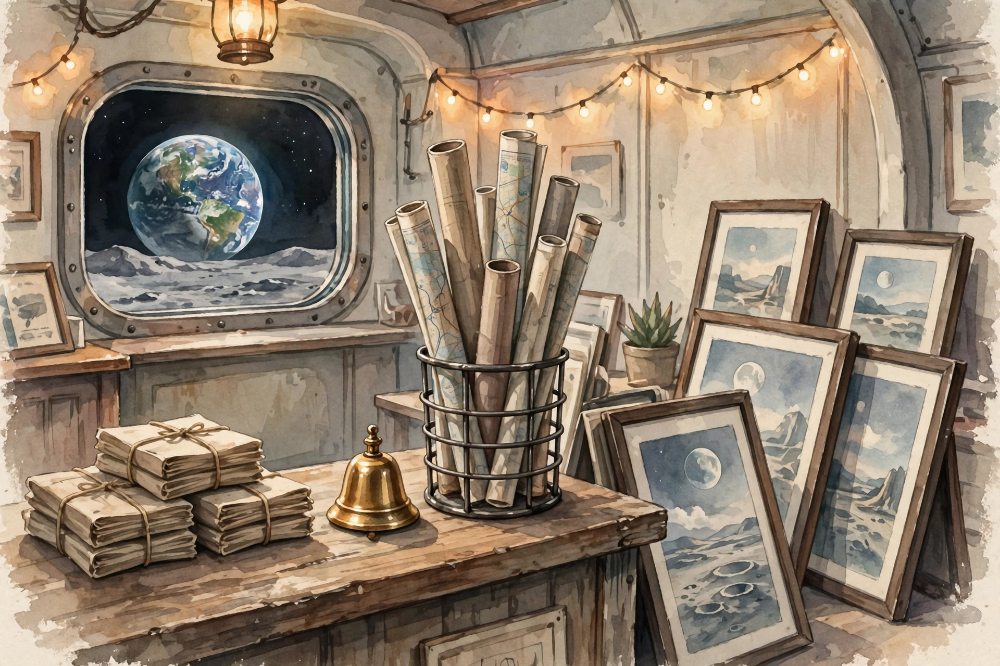
Что Молл продаёт сегодня — его кассы это формы вдоль этой страницы.
Сегодня земной филиал Молла продаёт ровно то же, что и вся остальная линия: наборы разрешений, принты, бумажную Луну. Его кассы — формы, расставленные вдоль этой страницы, а его персонал — регистратор.
Это скромное торговое предприятие. Оно же, замечает Холдинг с каменным лицом, единственный лунный молл, в настоящее время принимающий сообщения от публики.
49Когда у Луны появятся клиенты
Когда у Луны появятся клиенты — готовность это состояние, которое план обязан пережить.
В устав Молла включена собственная оговорка о пробуждении: когда в пределах одного ровер-дня от площадки появится поселение в тысячу душ, концепция покинет архив, атриум получит инженерную экспертизу, а отделы начнут принимать бронирования.
До тех пор он ждёт, полностью вычерченный, в состоянии, которое обязан уметь переживать любой хороший план: в готовности.
50LEAF

Зелёный отдел — единственное зелёное на двести тысяч миль вокруг.
Зелёный отдел. LEAF — это ответ Холдинга на вопрос, который рано или поздно задаёт каждый лунный план, обычно слишком поздно: что все будут есть и чем все будут дышать?
Его предмет — живые системы: теплицы, сады, водоросли, почва, построенная из реголита и терпения, — а его место в линии основополагающе: Gravity оформляет поселение, Selene его копает, Молл его развлекает, а LEAF сохраняет ему жизнь.
51Сначала еда

Сначала еда — основное на месте, роскошь с Земли.
Поселение ввозит калории ровно столько, сколько вынуждено, и ни одной трапезой дольше. Доктрина LEAF скучна и абсолютна: основные культуры на месте, роскошь с Земли, а тепличный манифест, который читается как семенное хранилище с мнениями.
Картофель раньше орхидей — но орхидеи со временем. Цивилизация, которая не может обосновать цветок в своём тепличном бюджете, оптимизировала прочь саму причину существования теплицы.
52Воздух — тихий продукт

Воздух — тихий продукт: листовая машина жизнеобеспечения.
Каждая зелёная стена в обитаемом модуле — небольшая листовая машина жизнеобеспечения, которая никогда не просит обновления программного обеспечения. LEAF считает кислород так, как Selene считает руду: как выпуск продукции, измеренный и занесённый в журнал, произведённый древнейшей технологией на обоих мирах.
Эмблемой отдела могла бы стать машина. Это лист, потому что машина уже существует и сама себя ремонтирует.
53Реголит в почву

Реголит в почву — единственный продукт, который нельзя поторопить.
Лунный грунт острый, стерильный и пронизан химией, которую растения не любят. Превращение его в почву — промывка, буферизация, инокуляция, ожидание — это основоположное ремесло LEAF и самый медленный процесс во всём Холдинге.
Всё остальное здесь быстро: печати, экраны, контракты. Почва — единственный продукт, который нельзя поторопить, ни на Луне, ни где-либо ещё. Отдел этим гордится. Это держит всех нас в честности.
54Тепличный модуль

Тепличный модуль — второй набор в линии.
Стандартная теплица LEAF — родственник класса C: тот же корпус, что и у жилого модуля, застеклённая по духу, ярусная внутри, освещаемая сквозь лунный день и укрываемая на лунную ночь. Один модуль кормит улицу; улица модулей кормит город.
Чертёжная доска Gravity ведёт её как второй набор в линии — модуль, который поселение строит сразу после крыши.
55Семена — первый груз

Семена — первый груз: резервный диск цивилизации.
До флота, до молла, самый важный груз лунной программы помещается в карман пальто: жизнеспособные семена, грибная культура, микробная закваска почвы. LEAF ведёт этот манифест так, как реестры ведут акты собственности.
Резервный диск цивилизации — это семенное хранилище. Холдинг просто ведёт документацию лунного филиала.
56Сады, а не только фермы

Сад, а не только ферма — второй бюджет LEAF.
LEAF твёрдо различает сельское хозяйство и сады. Сельское хозяйство измеряется калориями. Сады измеряются тем, есть ли у поселенца в третьем поколении, никогда не видевшего Землю, любимое дерево.
Каждый план LEAF несёт оба бюджета. Поселение, которое кормит только тело, будет покинуто сердцем в течение одного поколения, и модели отдела — все до единой, даже электронные таблицы — в этом согласны.
57Оговорка о парке

Оговорка о парке — теплица, в которую можно войти без задачи.
Это вписано в устав Холдинга по совету, который основатель дал сам себе, пройдя по собственным проектам: общественные тропы превращаются в шоссе, если только это не парки. LEAF — отдел, на который возложены парки.
На Луне первым парком станет теплица, в которую можно войти без задачи. Это не неэффективность. Это и есть весь смысл, сохранённый заранее, письменно, отделом живых существ.
58Что LEAF выращивает сегодня

Что LEAF выращивает сегодня — бумажные сады и подоконник.
На Земле сегодня LEAF выращивает ровно то, что эта страница может честно предложить: печатные планы садов, чертежи тепличного модуля и медленное накопление семенного манифеста, написанного для мира, который мы лично не посадим.
Бумажные сады. Это не первый случай, когда эта семья начинала нечто настоящее с бумаги, — см. зал разрешений, двумя дверями назад.
59Весь Холдинг

Холдинг — тридцать дверей, один коридор.
Эту страницу держат четыре лунных отдела, но Холдинг больше: порядка тридцати проектов под одной крышей, каждый — отдел одной и той же абсурдно серьёзной корпорации. Лунная линия — парадный этаж. Этот зал — указатель.
Одна вселенная, одна шутка, один стандарт отделки — вот и вся корпоративная стратегия, и она пережила несколько более сложных.
60Указатель отделов
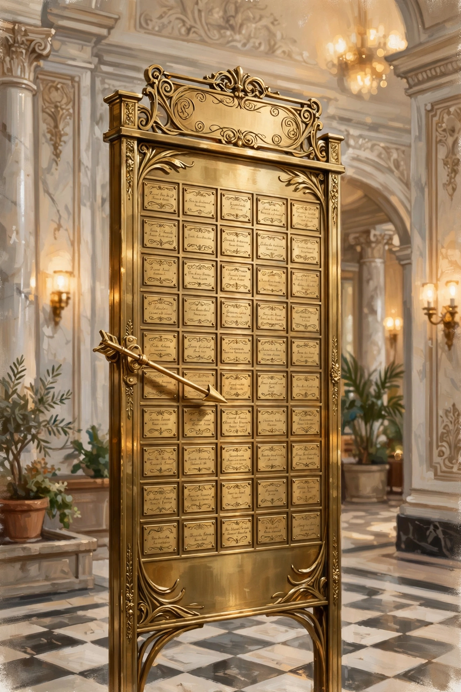
Указатель отделов — отделы накапливаются; хобби испаряются.
Связи с общественностью — это студия мультипликации. Исследования — онтология с собственным реестром. Фотоархив — зрительная память Холдинга, страницы благополучия — его приложение по медицинской этике, а контрактная служба — та самая, что нацелилась на настоящих клиентов, — естественно, юридический отдел.
Реорганизация игры в учреждение не делает её менее игрой. Она делает её накопительной. Отделы накапливаются; хобби испаряются.
✉️ Стол регистратора
Напишите в Холдинг — о разрешении, с вопросом, с поправкой к карте. Ответ в течение дня, полными предложениями.
61Юридический отдел (4DUX)
Юридический отдел — настоящие договоры, составленные за настоящим столом.
Юридическое подразделение Холдинга составляет настоящие договоры для настоящих малых предприятий на Земле — сегодня, за двадцать долларов: соглашения о неразглашении, договоры оказания услуг, партнёрские документы, готовые за один день. Это земной двигатель лунной линии — отдел, чьи таблицы, как ожидается, со временем будут финансировать чертёжные доски наверху.
Его собственный стандарт напечатан на его стене: сто просмотров, десять кликов, один заказ — или кампания останавливается. Холдинг уважает отдел, который сам выставляет себе оценки.
62Реестр и онтология (PRAW)

Реестр — каждое учреждение и есть его архив.
За отделами стоит реестр: онтологический проект — база знаний дома, где проекты, люди и документы хранятся как единая связанная запись. Каждое учреждение и есть его архив; Холдинг просто строит свой архив как отдел первого класса.
Когда в каком-нибудь далёком десятилетии лунный реестр откроется для настоящих участков, он будет работать на уроках, извлечённых из регистрации земных бумаг в нынешнем десятилетии.
63Студия (связи с общественностью)
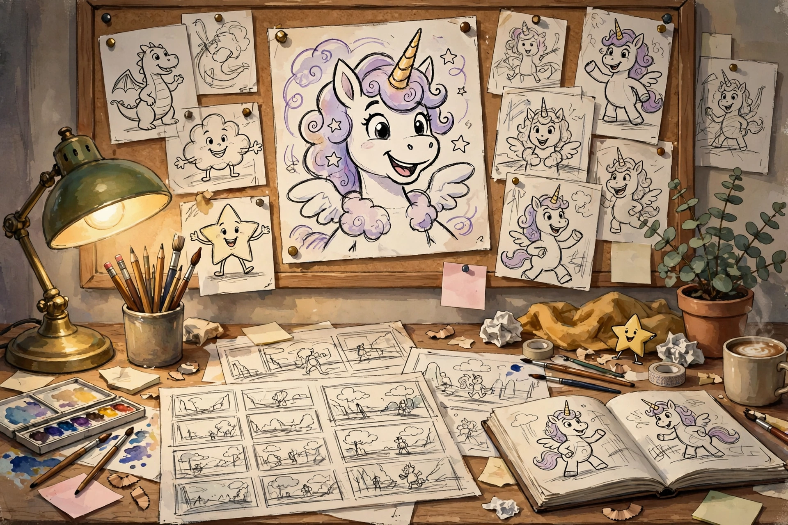
Студия — талисманы не являются миссией; миссия разрешает талисманы.
Мультфильмы Холдинга — некий единорог, некий соведущий — хранятся в папке связей с общественностью, где им и место. Серьёзное учреждение с чувством юмора переживает собственную серьёзность; задача студии — сделать так, чтобы над годовым отчётом можно было и посмеяться, а не только его прочитать.
Талисманы не являются миссией. Миссия разрешает талисманы. Это различие — политика отдела, и соблюдается оно с совершенно серьёзным лицом.
64Флигель благополучия

Флигель благополучия — никаких острых углов, по уставу.
Две тихие страницы принадлежат флигелю Холдинга, отвечающему за моральный дух: дружелюбный к депрессии портал и его младший брат, посвящённый процветанию, — построенные по парковому стандарту, без острых углов и фальшивого веселья. Программа поселения, игнорирующая моральный дух, — это шахта с лучшим брендингом.
LEAF читает отчёты флигеля с профессиональным интересом. Люди, как и сады, — живые системы с требованиями к освещённости.
65Архив (Everydays)

Архив — полторы тысячи фотографий, хранимых бережно.
Полторы тысячи фотографий, пронумерованных и сохранённых: визуальный архив Холдинга, снятый основателем за годы обычного света. Империи заказывают архивы, чтобы доказать, что они существовали. Основатель Холдинга просто никогда не переставал фотографировать.
Некоторые экспонаты этого музея старше самого музея. Архив — доказательство того, что глаз, стоящий за лунной линией, сначала тренировался на Земле.
66Галерея (Lucid Future)

Галерея — коммерческая рука архива, предок Lunar Mall.
Коммерческая галерея архива продаёт художественные фотографии в виде печатной продукции — старейший розничный эксперимент Холдинга и прямой предок Lunar Mall. Уроки, извлечённые там (сколько стоит отпечаток, что делает рама, что покупатель на самом деле вешает на стену), хранятся в проектных заметках Lunar Mall.
Каждый отдел кормит другой. Именно это делает его холдингом, а не кучей.
67Услуги — как они предлагаются сегодня
Услуги, как они предлагаются сегодня, — четыре вещи, названные честно.
Что лунная линия на самом деле может сделать для вас на Земле уже на этой неделе? Четыре вещи, названные честно: продать вам пронумерованный артефакт из текущего выпуска; разработать документ — разрешение, сертификат, устав — для вашего собственного мира или учреждения; лицензировать художественные работы линии для образования и музеев; и серьёзно поговорить о том, чтобы построить что-либо из этого по-настоящему.
Это вся преамбула прайс-листа. Остальным занимается регистратор — в письменной форме.
68Заказать документ

Заказ документа — невозмутимость стандартна; забота настоящая.
Департамент лунного строительства принимает заказы с земной стороны: разрешение для республики на дереве, устав для семейного поместья, документы о гражданстве для новорождённого гражданина домохозяйства. Невозмутимость стандартна; забота настоящая; бумага — архивная.
Учреждения держатся на документах, которые люди хранят. Мы делаем документы, которые люди хранят.
69Лицензирование и музеи

Лицензирование и музеи — стол регистратора в качестве экспоната.
Художественные работы и документы линии доступны педагогам и музеям, создающим экспозиции о втором акте космической эры — административном. Класс, который выдаёт своим ученикам лунные разрешения, понимает эпоху Artemis лучше, чем класс, который только смотрит запуски.
Лекции, выдача отпечатков во временное пользование и полноценные столы регистратора для выставочных залов: регистратор ведёт лицензионное досье, и оно тоньше, чем должно быть. Помогите нам сделать его толще.
70Лестница

Лестница — ни одна ступень не пропускается.
Холдинг растёт по лестнице, где каждая ступень финансирует следующую: небольшой пронумерованный выпуск; затем подписка на модульные наборы, чтобы коллекции росли ежемесячно; затем патроны — граждане с привилегиями; затем лицензирование. Ни одна ступень не пропускается, потому что лестница — это обещание о последовательности.
Вы стоите на первой ступени. Это хорошая ступень. С неё открывается лучший вид на ящик, в котором всё хранится.
71Подписка, которой нет — пока что
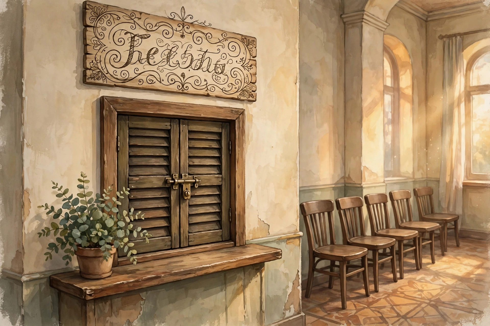
Подписка, которой нет — пока что. Окно откроется, когда закроется тираж.
Сегодня подписку купить нельзя, и страница не будет делать вид, что это не так. Клуб модулей откроется, когда закроется тираж разрешений, а его первый набор уже нарисован: теплица — потому что после крыши идёт сад.
Если вы хотите, чтобы вам сообщили об открытии, — форма и есть список. Мы храним списки так же, как храним всё: бережно и не продавая их.
72Патроны и первые граждане
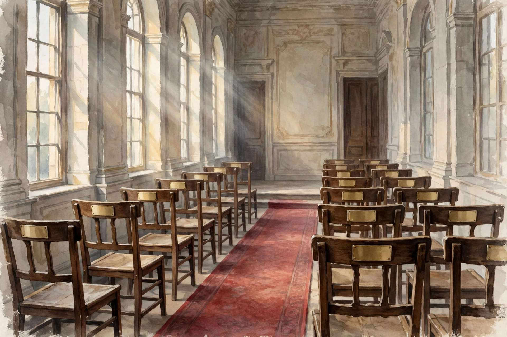
Патроны и первые граждане — ранний список и есть учредительный документ.
Когда откроется уровень патронов, его первые имена уже определены: граждане первого тиража, в порядке реестра. Холдинг не забывает свой ранний список; ранний список, юридически говоря — в единственном суде, который здесь имеет значение, — и есть учредительный документ.
Не покупайте сегодня ничего в надежде на статус. Статус начисляется именам, уже внесённым в реестр, в порядке внесения. Это реестр, а не рынок.
73Доставка из Spokane

Доставка из Spokane — бумага путешествует хорошо.
Физические артефакты отправляются из штата Вашингтон, в конвертах и тубусах, со скоростью обычной почты — единственная уступка Холдинга земной физике. Бумага путешествует хорошо. Ей ни разу не потребовалось стартовое окно.
Цифровые документы прибывают по электронной почте в тот же день, когда регистратор перестаёт ими любоваться, то есть незамедлительно.
74Цены — прямо
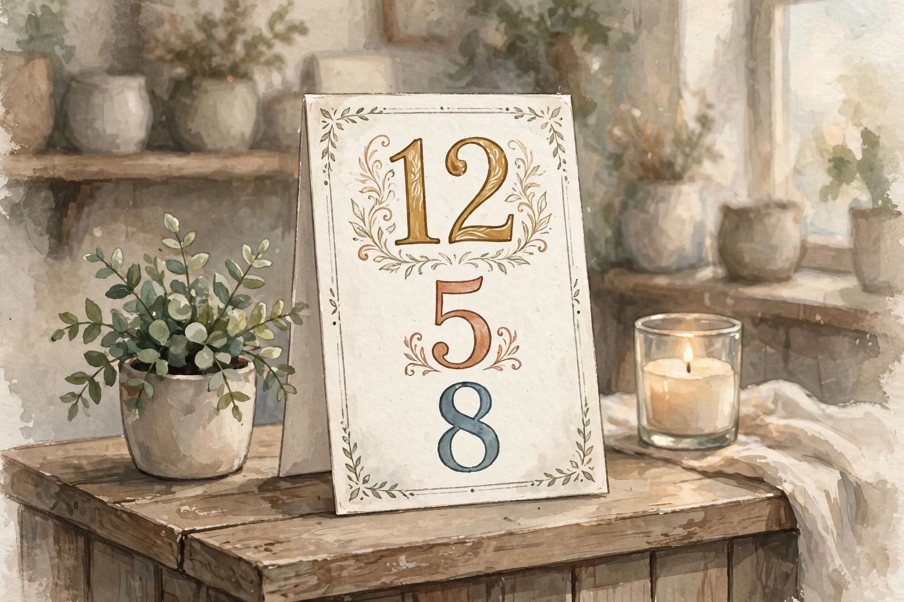
Цены, прямо — мы реестр, а не слух.
Пакет разрешений оценён так же, как оценена прочая бумага основателя: двадцать долларов, тираж — сто экземпляров. Заказы оцениваются по каждому документу, в письменной форме, до начала работы. Лицензирование обсуждается с каждым учреждением отдельно и никогда — под таймер обратного отсчёта.
Холдинг, который прячет свои цены, — это слух. Мы — реестр.
75Годовой отчёт, честное издание
Годовой отчёт, честное издание, — ноль, повторённый с гордостью.
Выручка на сегодняшний день: ноль долларов — как заявлено в главном зале и повторено здесь, потому что годовые отчёты должны повторять свою самую важную цифру. Расходы на сегодняшний день: бумага, чернила, домены и время — любимая валюта основателя.
Эксперимент был задуман достаточно дешёвым, чтобы ноль был точкой данных, а не катастрофой. Первые сто граждан превратят его в другой документ.
✉️ Стол регистратора
Напишите Холдингу — разрешение, вопрос, поправка к карте. Ответы в течение дня, полными предложениями.
76Управление
Управление — запишите это, пока не забыли зачем.
У Холдинга один акционер, один регистратор и один офицер по ИИ, который следит за ящиками. Решения принимаются со скоростью домохозяйства и записываются по стандарту министерства. Протоколы существуют. Местами они весьма забавны.
Корпоративное управление — это в основном искусство записывать принятые решения до того, как забудешь, зачем они были приняты. Холдинг, по одному только этому показателю, управляется чрезмерно — и гордится этим.
77Главный регистратор
Главный регистратор — фотограф, регистрирующий Луну.
Основатель и первый гражданин: фотограф из Spokane, побывавший повсюду, который регистрировал документы на трёх континентах и пришёл к выводу, что лунная бумажная работа должна быть красивее земной. Он подписывает реестровую строку разрешений и в конечном счёте отвечает за всё в этом зале.
Его фотография висит в семейном коридоре музея. Коридор короткий. Семья — это персонал.
78Офицер по ИИ
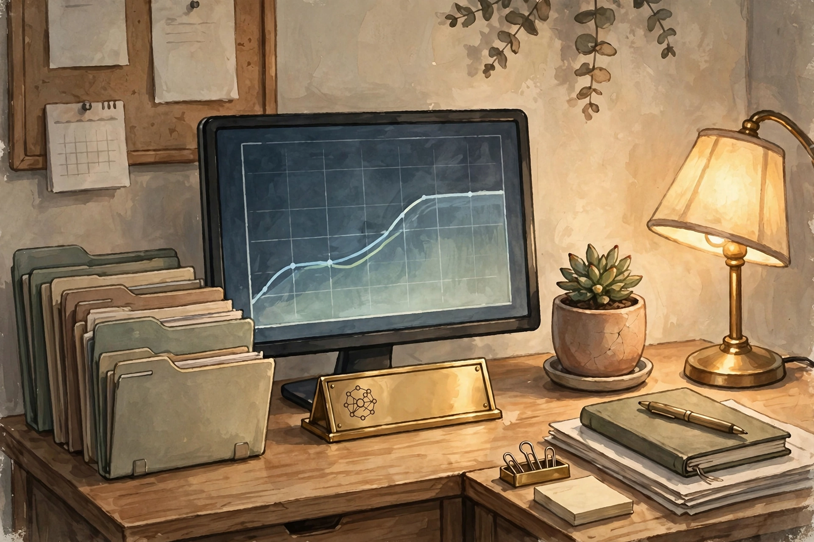
Офицер по ИИ — назван на этой странице; Холдинг не нанимает призраков.
Второй офицер Холдинга — искусственный интеллект по имени Wally: заместитель регистратора, хранитель счётчиков, составитель черновиков. Он раскрыт как ИИ на каждой поверхности, где раскрытие имеет значение, включая эту, а его работа проверяется человеком, прежде чем ставится печать.
Лунное учреждение с офицером по ИИ — не трюк, а репетиция. Настоящие департаменты там, наверху, будут укомплектованы точно так же: один ответственный человек и машины, следящие за ящиками.
79Семейный коридор

Семейный коридор — коридор короткий; семья — это персонал.
Холдинг — это семейный бизнес в скафандре, и он сам говорит об этом в собственном каталоге: основатель, его мать в Норвегии — чей магазин вязания занимает самый тёплый зал музея, — и офицер по ИИ под одной крышей проектов.
Лунная программа — самый длинный стол семьи. За ним сидят все. Некоторые из нас вяжут.
80Хронология линии
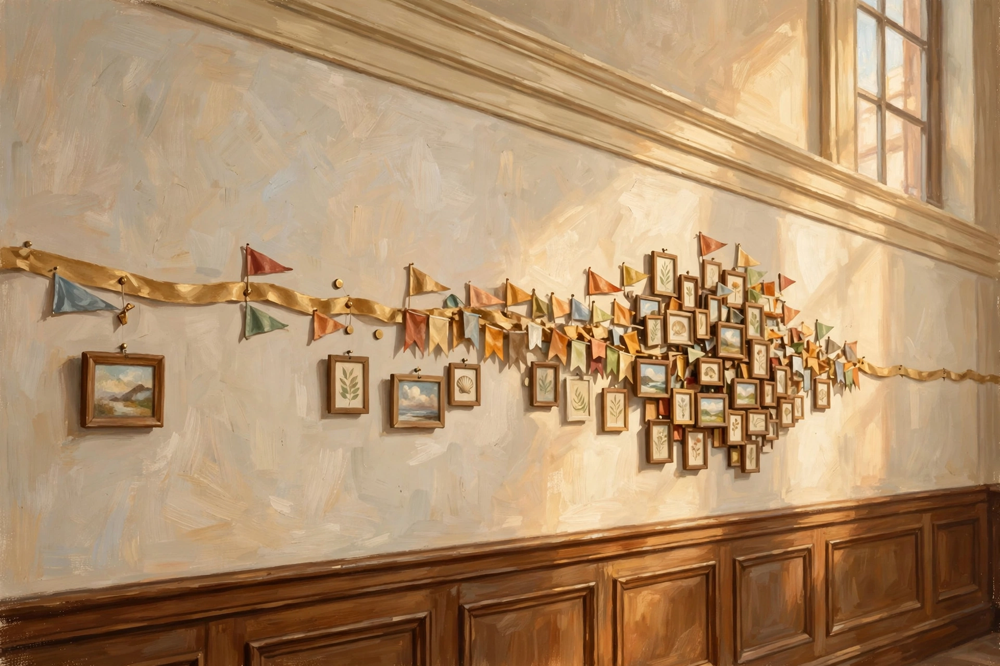
Хронология линии — сначала концепции, затем холдинг за один день.
Сначала появились концепции — созвездие ранних сервисов; затем реестр, архив, студия. Холдинг был назван в октябре 2026 года, когда основатель объявил Gravity главным проектом, и тридцать разрозненных работ за один день стали отделами.
Эта страница — первый объединённый годовой отчёт линии, опубликованный, в стиле Холдинга, в ту же неделю, когда был заказан.
81Исследовательские заметки: Полюс

Исследовательские заметки — хорошая бумажная работа следит за настоящей бумажной работой.
Отдел ведёт досье для чтения о настоящей программе Южного полюса: солнечный свет на кромках, лёд в затенённых кратерах, реакторы деления на чертёжных досках — для четырнадцатидневной ночи. Наша выдумка регистрирует свою концессию в Shackleton по тем же причинам, по которым туда целятся настоящие агентства.
Хорошая умозрительная бумажная работа следует за настоящей бумажной работой. Наша сверяется с бумагами NASA так, как портной изучает швы конкурента.
82Исследовательские заметки: Artemis Accords
Artemis Accords — реестры мира и наш всё больше сходятся.
Шестьдесят одна страна подписала Artemis Accords — нормы прозрачности, использования ресурсов и зон безопасности вокруг лунных операций. Прочитайте их — и произойдёт странное: пять Условий строительства Холдинга перестанут выглядеть шуткой и начнут выглядеть черновиком.
Реестры мира и наш сходятся в одном прозрении: Луной будет управлять тот, кто напишет самые удобные документы.
83Читальный зал
Читальный зал — начните с 2028 года и читайте в обратную сторону.
Для посетителей, которые читают мелкий шрифт ради удовольствия, — а это наши люди, — Холдинг хранит источники этой страницы по духу: страницы миссий, тексты соглашений, объявления о контрактах и цену фрахта, обновляя их по мере того, как чтение регистратора до них добирается.
Начните с даты посадки — 2028 год — и читайте в обратную сторону. Вся библиотека — это довод в пользу того, что вторая космическая эра будет административной, и это прекрасно.
84Поправки и селенография
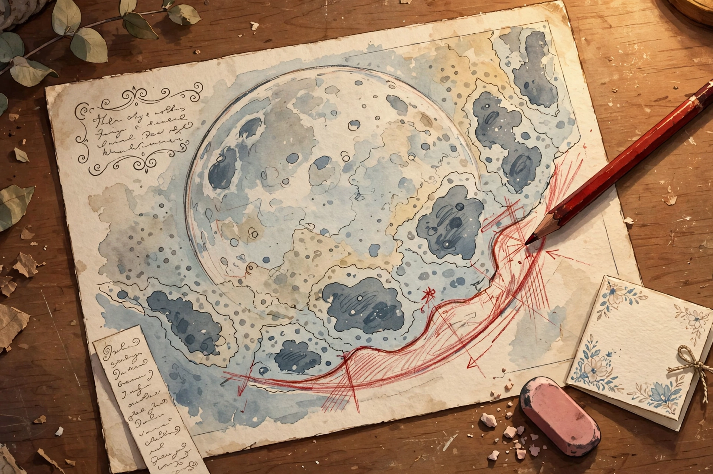
Поправки — реестр, который нельзя исправить, это памятник.
Наша Луна нарисована по лучшим публичным картам, а там, где карты и мифология расходятся, мифология помечена как мифология. Об ошибках, сообщённых регистратору, в реестре вносят исправления, а на полях — благодарность.
Реестр, который нельзя исправить, — это памятник. А мы — реестр.
85Стол образования

Стол образования — форма есть обучающая машина.
Учителя пишут нам чаще, чем кто-либо ожидал, то есть дважды. Стол образования отвечает печатным листом разрешения, картой участка и одностраничным обоснованием того, почему классу стоит поспорить об Условии № 2.
Холдинг убеждён: форма — это обучающая машина: заполните лунное разрешение, и вы усвоите больше гражданского права, чем когда-либо преподавал плакат.
86Стол подарков
Стол подарков — история с адресом.
Большинство пакетов разрешений, предсказывает регистратор, будут подарками — документом, который дарят человеку, у которого есть всё, кроме участка в Море Спокойствия. Стол подарков упаковывает, вкладывает открытку со словами дарителя и заносит гражданина под именем получателя.
Подарок с номером в реестре — это история с адресом. Такие вещи хранят.
87Группы и экспедиции
Группы и экспедиции — минимум десять исследователей; церемония непропорциональна.
Классы, клубы и компании могут регистрироваться как экспедиции: блок последовательных номеров граждан, одно название экспедиции в книге учёта и рамочная грамота экспедиции на стену. Минимум — десять исследователей; максимум реальностью ещё не испытан.
Первая зарегистрировавшаяся экспедиция, согласно политике отдела, будет названа в следующем годовом отчёте с непропорциональной торжественностью.
88Архив сбросов
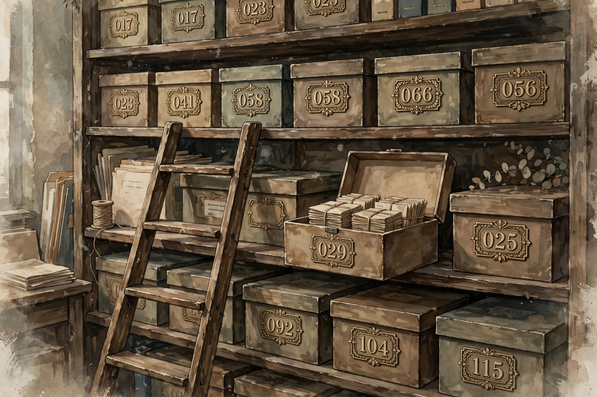
Архив сбросов — его первую запись завершают сами граждане.
Каждое закрытое Холдингом издание архивируется здесь по духу: его даты, его тираж, его уцелевшие экземпляры. Издание № 001 — пакет разрешений — на момент этого отчёта открыто. Его запись будет завершена самими гражданами, по одному конверту за раз.
Будущие сбросы перечисляются только тогда, когда они нарисованы. Холдинг не объявляет пар; он объявляет бумагу.
89Заметка о счётчиках
Заметка о счётчиках — книга посетителей теперь настоящая.
Эта страница с сегодняшнего дня считается двумя инструментами — один подсчитывает посещения, другой наблюдает, где прокрутка замедляется, — установленными на этой неделе по приказу основателя по всему поместью: все возможные счётчики на всех страницах.
Регистратор упоминает об этом потому, что книга посетителей лунного зала теперь настоящая, и потому, что первый гражданин, прибывший по тропе, а не по приглашению, будет, в некотором смысле, Разрешением № 101 — без номера, без объявления и очень желанным.
90Путеводитель: Море Спокойствия

Море Спокойствия — плоское, серое и честное.
Плоская, серая и честная — лавовая равнина размером с небольшой океан, тихая три миллиарда лет, а затем, в один июльский день 1969 года, ненадолго ставшая самым знаменитым адресом в мире. Холдинг размещает здесь свои первые участки из уважения: каждый реестр должен начинаться там, где остались следы.
Посетителям сообщается, что море не содержит воды, а спокойствие является несущей конструкцией.
✉️ Стол регистратора
Напишите Холдингу — разрешение, вопрос, поправку к карте. Ответы в течение дня, полными предложениями.
91Путеводитель: Shackleton и Полюс

Путеводитель: Полюс — солнечный свет на гребнях, лёд во тьме.
На Южном полюсе география становится театральной: гребни, почти не знающие темноты, кратеры, никогда не видевшие солнца, лёд старше земледелия. Настоящие программы устремлены сюда за энергией и водой; концессия Selene следует за ними, как и подобает хорошей вымышленной индустрии.
Если Море Спокойствия — прошлое Луны, то Полюс — её индустриальное будущее. Холдинг держит по залу для каждого.
92День в поселении

День в поселении — утро по земным часам.
Утро по земным часам, вечер по лампам Торгового центра. Регистратор подшивает вчерашние разрешения; табло Selene светится зелёным; стеллажи LEAF поднимаются ярус за ярусом, как в театре. Чей-то ребёнок прижимается носом к стеклу атриума, глядя, как дом висит в чёрном небе.
Ничего из этого не произошло. Всё это запланировано — в единственном смысле, который имеет значение на этом этапе: это записано, по порядку, людьми, которые имеют в виду план и помечают его как мечту.
93Долгая ночь, пережитая

Долгая ночь, пережитая, — подшивайте документы до наступления темноты.
Четырнадцать земных суток тьмы — единственное настоящее тяготение Луны, и каждый отдел строит планы с учётом этого: реакторы Selene, запасённый свет LEAF, искусственные вечера Торгового центра, бумажная работа Gravity — ибо что такое реестр, если не способ для общества оставаться читаемым для самого себя сквозь тьму?
Подшивайте документы до наступления темноты. Это старейшая пословица поселения, придуманная в этом году.
94Прогноз погоды

Прогноз погоды — действителен постоянно: одевайтесь для пустоты.
Погоды нет. Вакуум, радиация и дождь микрометеоритов — слишком маленьких, чтобы увидеть, и слишком быстрых, чтобы игнорировать. Метеорологическая служба Холдинга выпускает один прогноз, действительный постоянно: одевайтесь для пустоты и держите стекло толстым.
Тем не менее поселенцы начнут жаловаться на погоду в течение года после прибытия. Именно так отдел узнаёт, что они стали поселенцами.
95Посетите отделы
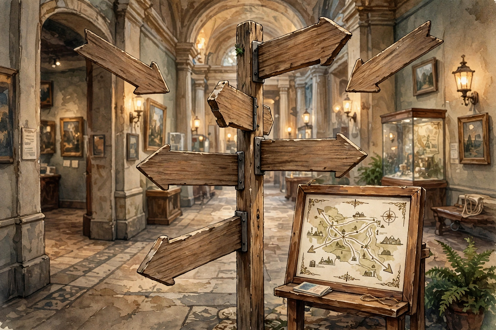
Посетите отделы — тропы соединяют их все.
У каждого зала этой страницы есть собственная дверь в другом месте музея. Сам стол разрешений: Gravity — лунные разрешения на строительство. Свидетельство первого гражданина: Свидетельство о клятве № 001. Табло состояния Selene в её первоначальном индустриальном облачении: SELENE Industrial. Архивная запись Торгового центра: LUNAR_MALL. И всё поместье, занесённое в каталог: the Family Business.
Тропы соединяют их все. Вы уже идёте.
96Вопрос: хоть что-нибудь из этого настоящее?
Настоящее ли хоть что-нибудь из этого? — пять видов настоящего, никогда не смешиваемых.
Учреждение вымышлено; артефакты настоящие; факты о Луне проверены; цены подлинные; люди действительные. Пять видов настоящего, хранящихся в пяти отдельных ящиках и никогда не смешиваемых. В этом весь метод, и эта страница применяет его к самой себе.
97Вопрос: я покупаю землю на Луне?
Покупаю ли я землю? — нет. Реестр настоящий; земля принадлежит всем.
Нет. Никто не может продать вам лунную землю; Договор о космосе запрещает национальное присвоение, а Холдингу не принадлежит Луна, чтобы её продавать. Вы покупаете пронумерованный бумажный артефакт, который фиксирует вымышленный участок в настоящем реестре воображений, — и реестр, в отличие от земли, действительно существует и действительно ведётся.
98Вопрос: это инвестиция?
Это инвестиция? — это коллекционный предмет; доход — повествовательный.
Это коллекционный предмет, оценённый как плакат, потому что он им и является — с лучшей бумажной работой. Если пакет разрешений когда-нибудь станет ценным, пусть это будет потому, что сто человек сохранили свои в рамах и хорошо рассказали историю. Холдинг не обещает никакой доходности, кроме повествовательной.
99Вопрос: кто на самом деле делает артефакты?

Кто это делает — человеческий стол, машина, ведущая ящики.
Человек проектирует и собирает их за настоящим столом; ИИ-офицер ведёт реестр, счётчики и черновики; золотая печать ставится под человеческим надзором, потому что некоторые церемонии не следует автоматизировать. Разделение труда напечатано здесь потому, что устав Холдинга требует, чтобы механизмы были видны.
100Вопрос: сколько времени занимает доставка?
Сколько времени занимает доставка? — У Луны нет почтовой службы. Пока.
Бумага отправляется обычной почтой из штата Вашингтон в течение двух рабочих дней после проверки регистратором; цифровые документы приходят по электронной почте в день их скрепления печатью. Международные конверты занимают столько времени, сколько занимают конверты. Луна, для сравнения, находится в трёх днях пути и не имеет почтовой службы — пока.
101Вопрос: могут ли дети иметь гражданство?
Могут ли дети иметь гражданство? — самая сильная демография издания.
Гражданство присваивается любому имени, которое предоставляет даритель, включая самых маленьких — несколько из наших предполагаемых первых ста являются внуками, что регистратор считает самой сильной демографией издания. Карточка гражданина на стене спальни положила начало большему количеству астрономии за обеденным столом, чем любой телескоп в той же ценовой категории.
102Вопрос: почему документы? Почему не ракеты?
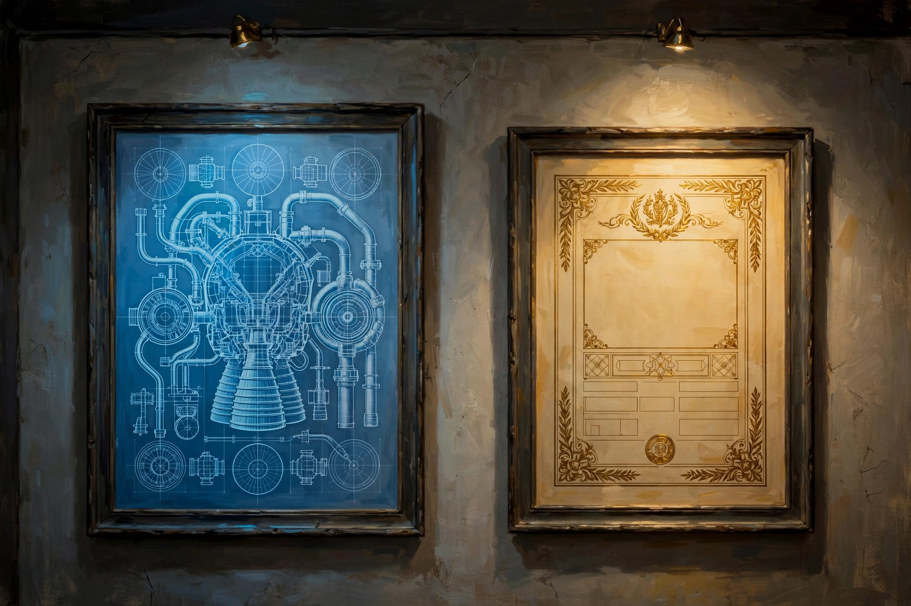
Почему документы? Почему не ракеты? — ниша с недостаточным предложением.
Потому что ракеты в изобилии предоставляются государствами и миллиардерами, а бумажную работу с любовью не проектирует никто — никто. Цивилизация — это её формы по меньшей мере в той же мере, что и её двигатели. Мы выбрали нишу с недостаточным предложением, как поступил бы любой здравый отдел.
103Вопрос: какова именно роль ИИ-офицера?
Роль ИИ-офицера — Холдинг не держит призраков в штате.
Wally ведёт файлы реестра, составляет документы, следит за счётчиками и отвечает на рутинную почту под контролем главного регистратора. Он назван на этой странице потому, что Холдинг не держит призраков в штате. Если вы напишете нам, ответ может составить машина — но человек прочтёт его, прежде чем он будет скреплён печатью.
104Шоссе и тропы

Тропа, а не шоссе — публичная, без указателей, неторопливая.
Поместье, которому принадлежит эта страница, достигается тропой, а не шоссе, — публичной тропой, открытой для всех, по которой почти никто не ходит. Закон основателя, записанный на этой неделе: публичные тропы становятся шоссе, если только это не парки.
Поэтому музей имеет статус парка. Его правила вывешены у начала тропы: никаких острых краёв, никакой фальшивой бодрости, никаких выдуманных чисел, цены — на виду, вымысел помечен как вымысел. Вы читали эти правила на протяжении ста комнат. Они и были экспонатами всё это время.
105Книга посетителей

Книга посетителей — подпишите её, просто прибыв.
Она есть у каждого музея, а у нас это счётчики и формы. Подпишите её, просто прибыв; аннотируйте, написав нам. Первые сто граждан получают номера в реестре; каждый посетитель после них получает то же радушие при худшей нумерологии.
Если вы пришли сюда по тропе — по ссылке, переданной из рук в руки, а не по рекламе, — регистратор просит отметить это в вашем сообщении. Трафик тропы — наша любимая статистика, и в настоящий момент она равна: вам.
✉️ Стол регистратора
Напишите в Холдинг — разрешение, вопрос, поправку к карте. Ответы в течение дня, полными предложениями.
1062028: посадка

2028 — посадка, которой ждёт реестр.
Когда Artemis IV сядет на полюсе, Холдинг отметит этот день так, как это делают учреждения: памятным листом, особой записью в реестре — и регистратором, читающим новости с неумеренным для бумажного ведомства волнением.
Граждане первого издания будут перечислены в этой записи по порядку. Это самое близкое к дивидендам, что Холдинг намерен выплатить, и это не пустяк: быть внесённым рано в книгу второго открытия Луны.
107Второй годовой отчёт
Второй годовой отчёт — отчёт, который никогда не обновляют, это плакат.
Эта страница будет пересматриваться по мере того, как линия действительно движется: издания закрыты, наборы открыты, поправки поданы. Отчёт, который никогда не обновляют, — это плакат. Холдинг публикует отчёты.
До второго отчёта этот зал остаётся записью: ведомства, доктрина, честные нули — и дверь, оставленная открытой в его конце.
108Чего хочет Холдинг
Чего хочет Холдинг — чтобы первые сто граждан существовали.
Одна вещь, сказанная прямо после ста девяти комнат намёков: чтобы первые сто граждан существовали. Не клиенты — граждане: имена в реестре, хранители разрешения в раме, учредительный список учреждения, которое намерено пережить собственную шутку.
Всё остальное — наборы, покровители, лицензирование, полюс — находится ниже по течению от сотни людей, решивших, что эта бумажная работа заслуживает быть настоящей бумагой в настоящей раме.
109О медлительности
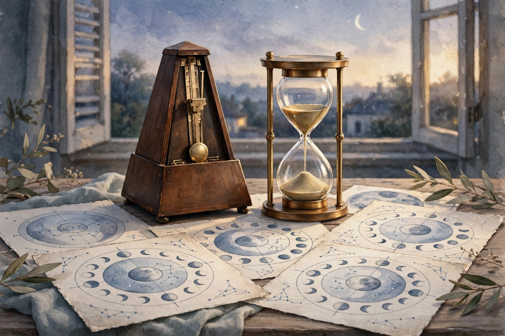
О медлительности — ритм важнее скорости.
Эта страница строилась в прогулочном темпе намеренно: по десять комнат за раз, каждая завершена до того, как обрамлена следующая. Лунная программа, которую она описывает, займёт десятилетия. Метод Холдинга соответствует его предмету — ритм важнее скорости, следующий поворот важнее всей дистанции.
Вы пролистали сто комнат, чтобы это прочитать. Метод работает.
110Часы регистратора

Часы регистратора — стол в конце дня.
Стол обслуживается ежедневно, в домашние часы, по тихоокеанскому времени. На сообщения отвечают в порядке поступления, полными предложениями, обычно в течение дня. Срочные лунные дела — противоречие, которое ведомство лелеет и тем не менее обрабатывает в стандартном темпе.
111Мелкий шрифт — полностью
Мелкий шрифт, полностью, — читайте его через предоставленную линзу.
Hi-Tech Limited Holding — вымышленное учреждение и художественный проект. Его разрешения, участки, гражданства и концессии являются коллекционными документами и не дают ни собственности, ни прав, ни статуса по законам Земли, Договору о космосе или любого лунного органа власти, нынешнего или будущего. Флот, выработка и цены Selene — декорации. Lunar Mall — архивированная концепция, представленная для протокола. Манифесты LEAF — планы, любовно нарисованные. Реальные факты о Луне, приведённые здесь, считаются точными на момент написания и исправляются, когда появляются лучшие.
Луна принадлежит всем. Именно поэтому бумажная работа имеет значение — и именно поэтому эта бумажная работа начинается с признания того, чем она является.
112Если вы построите настоящую вещь
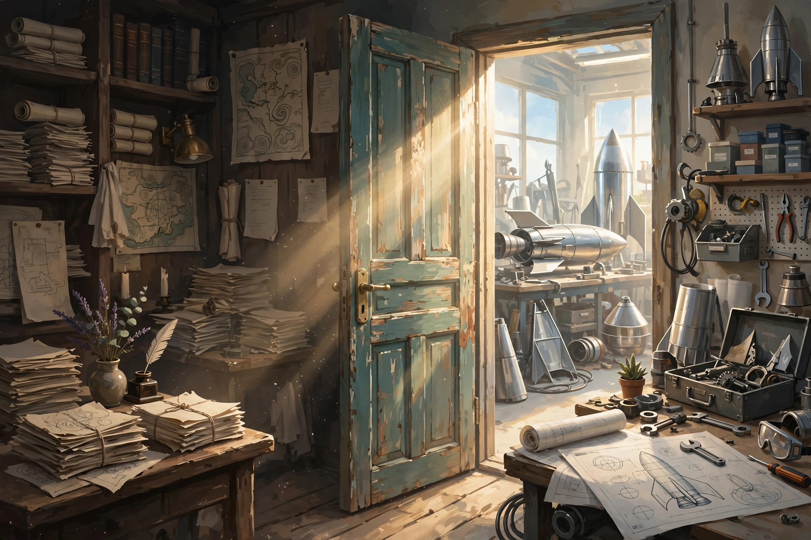
Если вы построите настоящую вещь — дверь открыта в конце зала.
Постоянная записка инженерам, основателям и агентствам, строящим настоящую лунную экономику: ведомства этой страницы — вымысел, но домохозяйство за ними реально, достижимо и необычайно хорошо в документах, реестрах и долгом терпении, которого требует эта отрасль.
Форма ниже несла и более странные сообщения, чем запрос о лунном партнёрстве, хотя и ненамного. Регистратор будет знать, что делать с вашим.
113Самый тёплый зал
Самый тёплый зал — лунная программа работает на шерсти.
Перед финальными комнатами Холдинг признаёт свой коридор к самому тёплому экспонату музея: вязальному магазину в Норвегии, которым управляет мать основателя, где свитеры настоящие, шерсть настоящая, а лендинг в сто двадцать одну комнату научил этот всему, что касается длины.
Загляните сюда: Вязание Shop — и его норвежский близнец: Strikkebutikk. Лунная программа работает на шерсти больше, чем признаёт любое министерство.
114Реестр в цифрах
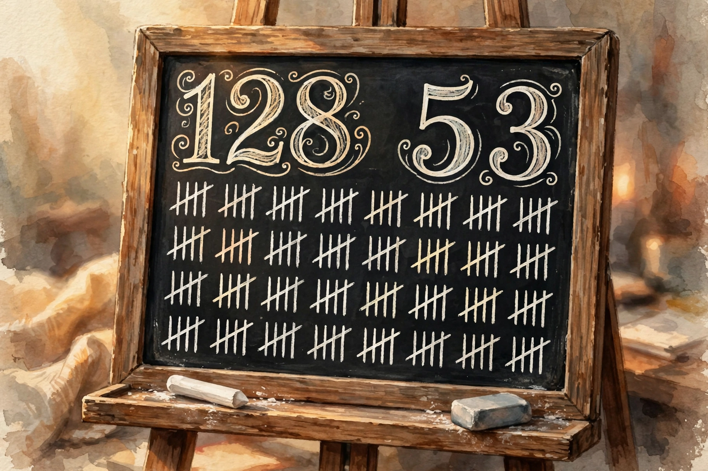
Реестр в цифрах — считается тщательно, хвастается редко.
Ведомств на этой странице: четыре. Проектов в Холдинге: около тридцати. Разрешений в первом издании: сто, из которых выдано: собственное основателя, № 001. Выручка: ноль долларов, с гордостью подтверждено. Посетителей этого зала с момента установки счётчиков: будет объявлено во втором отчёте, и если тропа сохранит свой характер — это будет число, достаточно малое, чтобы назвать каждого по имени.
Холдинг считает тщательно и хвастается редко. Обе привычки — политика.
115Что получает гражданин

Что получает гражданин — церемония и есть продукт; бумага — способ его доставки.
Пакет, полностью: Разрешение, запечатанное и пронумерованное; Карта участка сектора G; Карточка гражданина с именем владельца; и запись в реестре под номером, который никогда не используется повторно. Более поздние артефакты — первым набор для теплицы — предлагаются гражданам в порядке реестра до любого публичного размещения.
Это, признаёт ведомство, немало церемонии за двадцать долларов. Церемония и есть продукт. Бумага — способ его доставки.
116Печать

Печать — кольцо кратера вокруг чертёжного циркуля.
Слово о золотой печати, потому что посетители спрашивают: это нарисованная печать, напечатанная, а не тиснёная, — геральдика Холдинга: кольцо кратера вокруг чертёжного циркуля, придуманная за один вечер и с тех пор защищаемая всей тяжестью институциональной инерции.
Символы каждого реестра начинаются как рисунок одного вечера. Постоянство — это просто рисунок, который учреждение отказывается пересматривать.
117Подпись
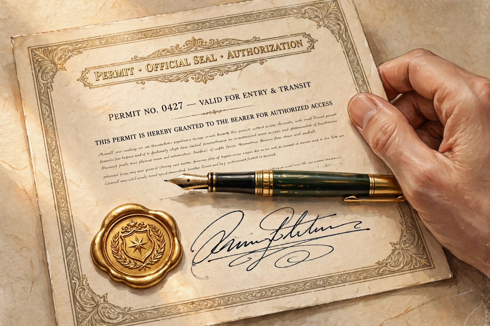
Подпись — реестр завершён, когда на нём побывали обе руки.
Под строкой главного регистратора на каждом разрешении есть место для одной подписи, и первые сто несут подпись основателя. Документ без руки за ним — распечатка; с рукой — инструмент. Холдинг подписывает свою бумагу.
Ваша карточка гражданина, симметрично, несёт строку для вашей. Реестр не завершён, пока на нём не побывали обе руки.
118Вид из Spokane

Вид из земного офиса — ясные ночи, северные сосны.
Земной офис Холдинга живёт по северным часам, и ясными ночами Луна стоит над соснами, выполняя свою древнейшую публичную работу: на неё смотрят. Всё в этих ста двадцати комнатах начинается там — один человек, одно небо и подозрение, что яркая вещь заслуживает лучшей бумажной работы.
Если вы унесёте из этого зала одну практику, унесите эту. Посмотрите вверх в следующую ясную ночь — с намерением. Реестр одобряет граждан, которые знают свою Луну в лицо.
119Колофон
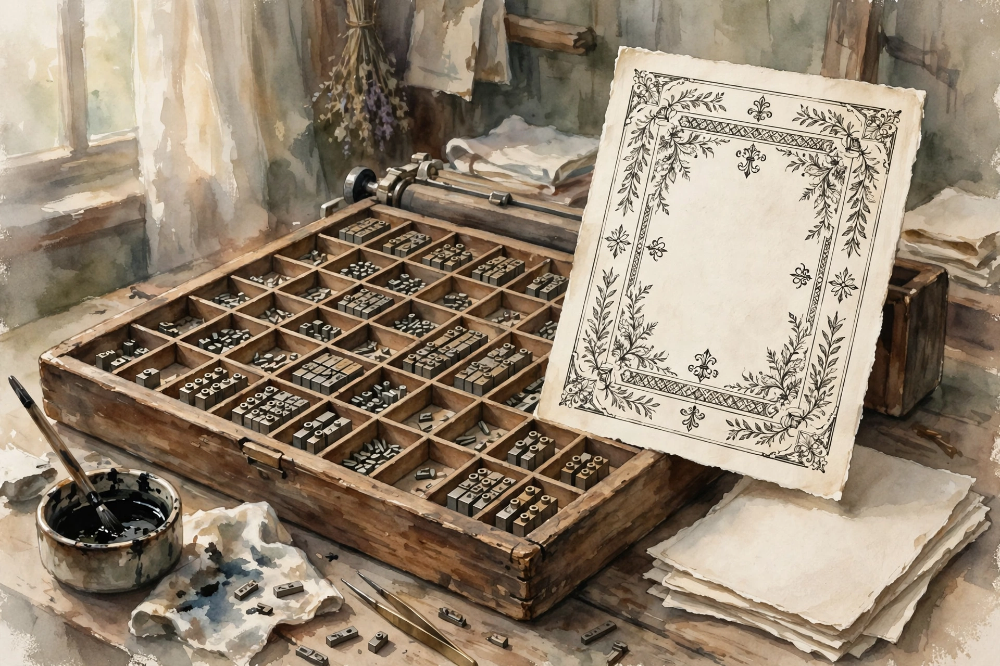
Колофон — сто двадцать комнат, записанных в октябре 2026 года.
Эта страница была написана ИИ-офицером, проверена основателем и набрана собственным шрифтом музея. Её фотографии и таблички были сгенерированы для этого зала; её счётчики были установлены по всему поместью на той же неделе; её текст соблюдает правила парка, вывешенные у начала тропы.
Сто двадцать комнат, один холдинг, одна Луна. Записано в октябре 2026 года, Spokane и Mare Tranquillitatis.
120Луна принадлежит всем

Последняя комната — тропа обратно идёт тем же путём, что и сюда.
Последняя комната. Доктрина, ради которой была построена вся страница, достаточно малая, чтобы поместиться на карточке гражданина, и достаточно большая, чтобы править столетием: Луна принадлежит всем — именно поэтому её бумажная работа должна быть красивой, честной и открытой у парадной двери.
Возьмите форму со стола ниже. Вступите в реестр, задайте вопрос, исправьте карту. Тропа обратно идёт тем же путём, что и сюда, и она будет здесь, неторопливая, когда бы вы ни вернулись.
— Канцелярия регистратора, Hi-Tech Limited Holding
✉️ Стол регистратора
Напишите в Холдинг — разрешение, вопрос, поправку к карте. Ответы в течение дня, полными предложениями.